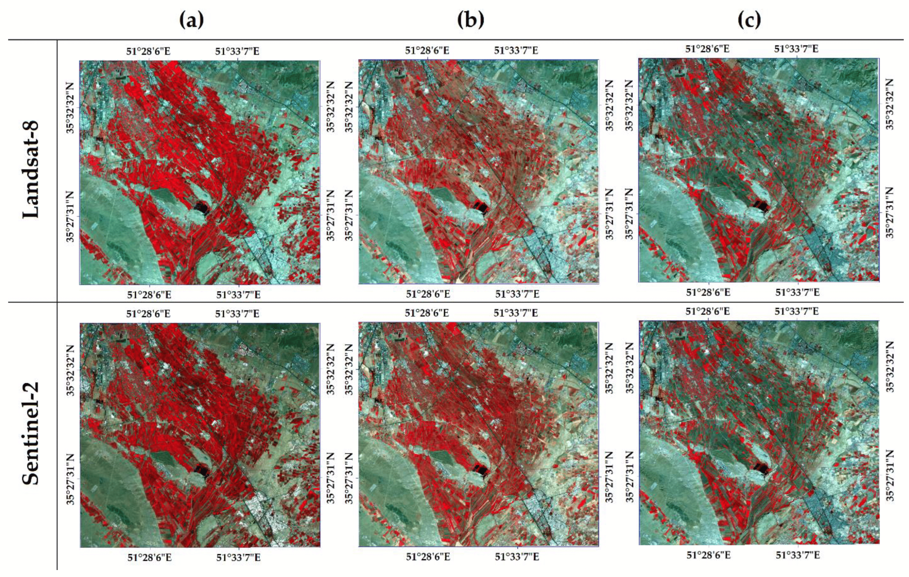

{kind=link}
| Satellite | SpatialResolution | SwathWidth | Sensor | RevisitTime | NumberOfBands | ComparableBands |
|---|---|---|---|---|---|---|
| Landsat-8 | 30m | 185km | Operational Land Imager (OLI) | 16 days | 11 | blue: 485 nm, green: 563 nm, red: 655 nm, NIR: 865 nm, short-wave infrared 1 (SWIR1): 1610 nm, SWIR2: 2200 nm |
| Sentinel-2 | up to 10m | 290km | Multispectral Instruments (MSI) | 5 days | 13 | blue: 490 nm, green: 560 nm, red: 665 nm, NIR: 842 nm, SWIR1: 1910 nm, and SWIR2: 2190 nm |
1 Introduction to Remote Sensing
1.1 Summary
As a relative newbie to Remote Sensing there was so much new information this week that it’s very difficult to choose even a few things to talk about without writing an whole essay. Therefore I have decided that the best way to summarise this would be through a mind map Figure 1.1.
There is so much information that could be discussed here but I’d like to focus on the bands. Images produced at different bands are what makes up the creation of useful and relevant images. Personally I have previously attempted to use earth observation data without understanding the differences between the bands and this made the task at hand incredibly difficult and mainly involved mindlessly following guides and videos just to get a semi-readable output. So this weeks introduction to remote sensing really helped me to understand what bands relate to which information on the ground. And importantly how the different bands can be combined depending on the purpose of any analysis.
1.2 Application
There are numerous applications for remote sensing which have been discussed widely in many articles. Just by searching scholarly articles published in just the past month for the term “remote sensing”, hundreds of articles are returned. By scanning the first few pages articles ranging from fire monitoring, wheat yield prediction, military and flooding are evident. Also, the number of different landscapes that can be monitored are also highly evident, including polar regions, mountains, wetlands, cities, forests and agricultural land.
Whilst many of the use cases available are fascinating, as this is an introduction to remote sensing it would be easy to get lost in the array of use cases on offer. As such I have instead decided to focuses on a comparison between Landsat-8 and Sentinel-2. There are still a huge amount of articles to consider in this topic, many again with very different use cases however I will consider two more general comparison articles.
1.2.1 Prelimary Sentinel-2 and Landsat 8 Comparison
Despite the many variables in sensor technology it is possible to compare imagery from Landsat-8 and Sentinel-2 due to an overlap in the bands captured by each. Mandanici and Bitelli (2016) prepared an initial comparison approximately a year after Sentinel-2 was launched in 2015. Landsat-8 was launched in 2013.
Mandanici and Bitelli begin with a basic summary of the sensor which provides useful context for their comparison which summarised in Table 1.1.
Six sites across the Earth were chosen to compare Sentinel/Landsat images, the sites were chosen to provide a mix of land cover types and climatic conditions, the comparison images were taken on the same day to build as close a comparison as possible. Correlation and regression coefficients were then calculated across the bands for the study areas.
From my currently limited remote sensing knowledge I found this methodology difficult to follow due to it’s highly mathematical model, however the overall results showed there was a very good correlation between the corresponding bands. Although limitations were identified including radiometric differences requiring careful evaluation and investigating discrepancies in reflectance values relevance.
1.2.2 Comparison using Google Earth Engine
The article by Nasiri et al. (2022) was chosen due to it’s more contemporary nature providing a useful and relevant comparison against the preliminary comparison. A further advantage of reviewing this research was it’s methodology of using Google Earth Engine (GEE). We will begin using Google Earth Engine later in the course so it seemed even more appropriate to use this paper.
The specific methodology for comparing Landsat-8 and Sentinel-2 involved producing time-series analysis of a single study area (Tehran Province, Iran) using images from both satellites. As the resolutions did not match the MSI data was downsampled to the match that of OLI.
The first output was a range of comparison images Figure 1.2 which help demonstrate how difficult it is for the human eye to identify variations in accuracy of this level of data.

The second output was more in-depth evaluation
1.2.3 Review
Despite lacking some knowledge around the specific calculations in the analysis and found these to be two very interesting articles. The comparison between the methodologies is quite clear with Nasiri et al. (2022) being easier to follow mainly due to it’s use of more visual representation of the data.
The methodology for Mandanici and Bitelli (2016) appears to be a lot less reproducible as there is less detail in this section, it also does not refer to which languages, applications, etc. that were used. Nasiri on the otherhand was more reproducible due to it’s use of Google Earth Engine which has the added bonus of avoiding local storage issues and providing greater computing power for analysis and processing (Carrasco et al. 2019). This may just be due to the fact that Google Earth Engine wasn’t as widely used or known in 2016 as it is was 2022.
The main limitations I see with both articles if that the number of samples used was quite low and therefore it cannot be said with absolute certainty whether the results would be replicated in other areas. Mandanici does look at multiple sites but they are chosen for their differing landscapes and climate. Nasiri on the other hand only uses one sample area but with clearly distinguished land uses, Whilst this is useful as it identified variations in accuracy across land uses (artificial land 95-100%, bare earth 71-86%) it is not clear whether similar results would be expected in other areas of interest.
1.3 Reflection
Both articles discussed in Section 1.2 provide a good overview of both Landsat-8 and Sentinel-2 which helps to consolidate some of the topics taught in class this week. Especially in relation to how different bands can be used for different purposes. This will be extremely useful in the coming months as we look at our own analysis in this course and in CASA0025, but also as part of work as we begin to use a new Earth Observation Data Hub.
Some of the methodology of both papers is still difficult for me to process, particularly around the specific analysis and calculations, but hopefully this is because it is still the first week of remote sensing. However reading these articles really helped my understanding of the use cases of both satellites and specifically their similiarities and importantly how the spectral resolution of the same bands have slight variations to be aware of. Also understanding how bands, can be combined in different ways and in different applications to produce similar images for analysis. This then helps to provide even more comparable images across a larger temporal scale as any gaps in imagery (possibly due to constraints such as scattering and in particular cloud cover) from one satellite may be able to be filled by the other.
Another topic I would have liked to explore is the effect that different types of scattering has on the images captured and how any pre-processing by the agencies responsible for the data affects the images that we see.